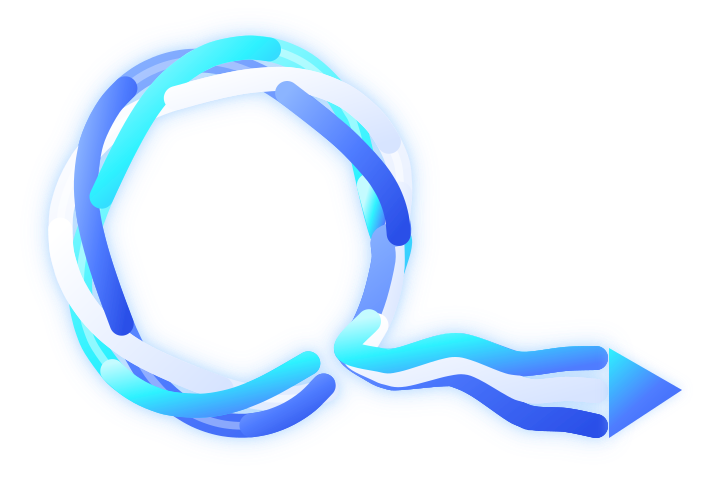

<!-- Copy-paste Top Nav (Watch active example).
     Edit data-watch-href in ONE spot here when the Watch URL is finalized. -->
<header
  class="qor-nav"
  data-qor-nav
  data-active="watch"
  data-receipts-href="https://qortime.com"
  data-capture-href="https://qortime.com/cap"
  data-watch-href="#watch-coming-soon"
>
  <nav class="qor-nav__inner" aria-label="Qor product family">
    <a class="qor-nav__brand" href="/">
      <span class="qor-nav__mark">
        
        <span
          class="qor-shimmer"
          style="--qor-shimmer-mask: url('brand/logo-icon.svg')"
          aria-hidden="true"
        ></span>
      </span>
      <span class="qor-nav__wordmark">
        QorStream<span class="qor-nav__wordmark-sub">Watch</span>
      </span>
    </a>

    <div class="qor-nav__track">
      <a class="qor-nav__link" data-qor-link="receipts" href="https://qortime.com">Receipts</a>
      <a class="qor-nav__link" data-qor-link="capture" href="https://qortime.com/cap">Capture</a>
      <a class="qor-nav__link" data-qor-link="watch" href="#watch-coming-soon" aria-current="page">Watch</a>
      <span class="qor-nav__weave" aria-hidden="true">
        <span class="qor-nav__strand qor-nav__strand--blue"></span>
        <span class="qor-nav__strand qor-nav__strand--cyan"></span>
        <span class="qor-nav__strand qor-nav__strand--white"></span>
        <span class="qor-nav__knot"></span>
      </span>
    </div>

    <div class="qor-nav__actions">
      <a class="qor-nav__cta" href="#self-host">Self-Host</a>
      <button
        class="qor-nav__toggle"
        type="button"
        aria-expanded="false"
        aria-controls="qor-mobile-sheet"
        aria-label="Toggle family menu"
      >
        <span class="qor-nav__toggle-lanes" aria-hidden="true">
          <span></span><span></span><span></span>
        </span>
      </button>
    </div>
  </nav>

  <div class="qor-nav__sheet" id="qor-mobile-sheet" hidden>
    <div class="qor-nav__sheet-panel" role="dialog" aria-label="Qor family navigation">
      <a class="qor-nav__sheet-link" data-qor-link="receipts" href="https://qortime.com">
        <span>Receipts</span>
      </a>
      <a class="qor-nav__sheet-link" data-qor-link="capture" href="https://qortime.com/cap">
        <span>Capture</span>
      </a>
      <a class="qor-nav__sheet-link" data-qor-link="watch" href="#watch-coming-soon" aria-current="page">
        <span>Watch</span>
      </a>
      <a class="qor-nav__cta qor-nav__sheet-cta" href="#self-host">Self-Host</a>
    </div>
  </div>
</header>
